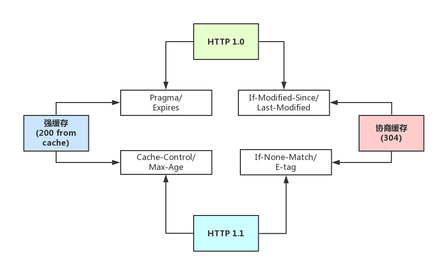

当前位置：skeleton
浏览其它
http缓存
前后端的http交互中，使用缓存能很大程度上提升效率，而且基本上对性能有要求的前端项目都是必用缓存的
强缓存和弱缓存
强缓存（200 from cache）：浏览器如果判断本地缓存未过期，就直接使用，无需发起http请求
- 未过期时，必须更新资源路径才能发起新的请求
协商缓存（304）：浏览器会向服务端发起http请求，然后服务端告诉浏览器文件未改变，让浏览器使用本地缓存
- 使用Ctrl + F5强制刷新可以使得协商缓存无效
缓存头部
强缓存：
http1.1：Cache-Control/Max-Age
http1.0：Pragma/Expires
协商缓存
http1.1：If-None-Match/E-tag
http1.0：If-Modified-Since/Last-Modified
头部区别
http1.0中的缓存控制：
Pragma：严格来说，它不属于专门的缓存控制头部，但是它设置no-cache时可以让本地强缓存失效（属于编译控制，来实现特定的指令，主要是因为兼容http1.0，所以以前又被大量应用）
Expires：服务端配置的，属于强缓存，用来控制在规定的时间之前，浏览器不会发出请求，而是直接使用本地缓存，注意，Expires一般对应服务器端时间，如Expires：Fri, 30 Oct 1998 14:19:41
If-Modified-Since/Last-Modified：这两个是成对出现的，属于协商缓存的内容，其中浏览器的头部是If-Modified-Since，而服务端的是Last-Modified，它的作用是，在发起请求时，如果If-Modified-Since和Last-Modified匹配，那么代表服务器资源并未改变，因此服务端不会返回资源实体，而是只返回头部，通知浏览器可以使用本地缓存。Last-Modified，顾名思义，指的是文件最后的修改时间，而且只能精确到1s以内
http1.1中的缓存控制：
Cache-Control：缓存控制头部，有no-cache、max-age等多种取值
Max-Age：服务端配置的，用来控制强缓存，在规定的时间之内，浏览器无需发出请求，直接使用本地缓存，注意，Max-Age是Cache-Control头部的值，不是独立的头部，譬如Cache-Control: max-age=3600，而且它的值是绝对时间，由浏览器自己计算
If-None-Match/E-tag：这两个是成对出现的，属于协商缓存的内容，其中浏览器的头部是If-None-Match，而服务端的是E-tag，同样，发出请求后，如果If-None-Match和E-tag匹配，则代表内容未变，通知浏览器使用本地缓存，和Last-Modified不同，E-tag更精确，它是类似于指纹一样的东西，基于
FileEtag INode Mtime Size生成，也就是说，只要文件变，指纹就会变，而且没有1s精确度的限制。
Max-Age相比Expires：
Expires使用的是服务器端的时间，但是有时候会有这样一种情况-客户端时间和服务端不同步，那这样，可能就会出问题了，造成了浏览器本地的缓存无用或者一直无法过期，所以一般http1.1后不推荐使用Expires
而Max-Age使用的是客户端本地时间的计算，因此不会有这个问题，因此推荐使用Max-Age。
注意，如果同时启用了Cache-Control与Expires，Cache-Control优先级高。
E-tag相比Last-Modified：
Last-Modified：表明服务端的文件最后何时改变的，它有一个缺陷就是只能精确到1s，然后还有一个问题就是有的服务端的文件会周期性的改变，导致缓存失效
E-tag：是一种指纹机制，代表文件相关指纹，只有文件变才会变，也只要文件变就会变，也没有精确时间的限制，只要文件一变，立马E-tag就不一样了
如果同时带有E-tag和Last-Modified，服务端会优先检查E-tag
各大缓存头部的整体关系如下图：
